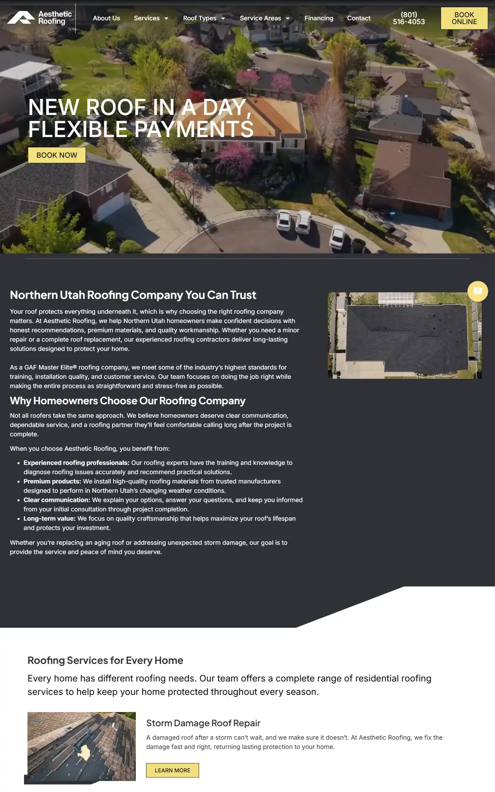
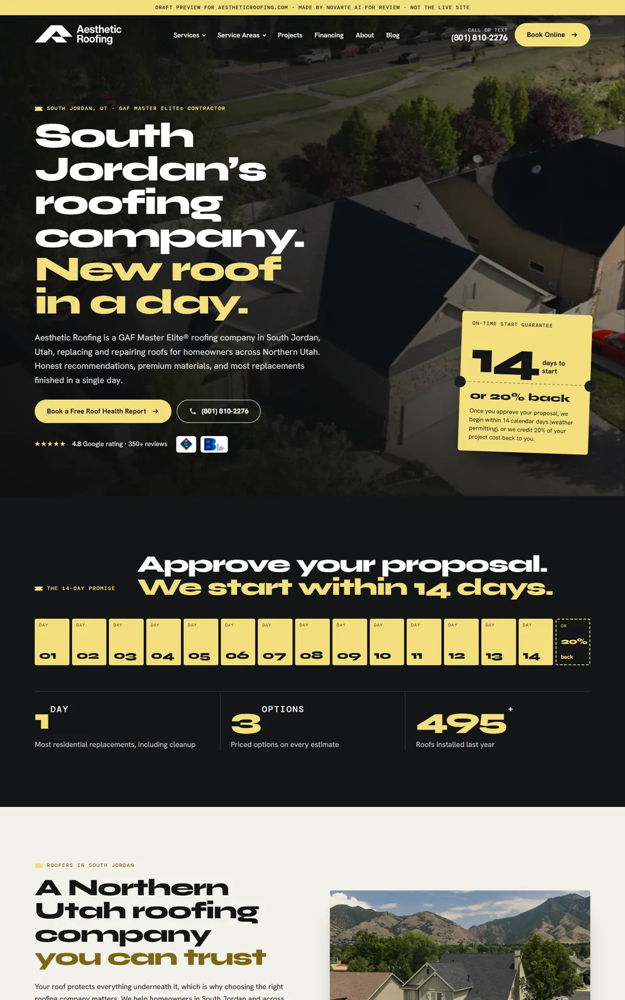
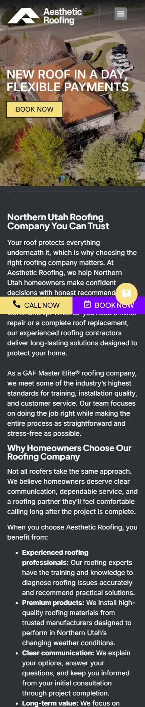
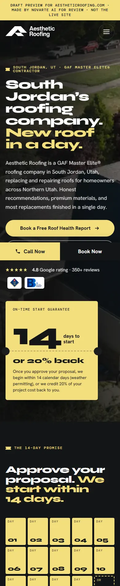

Start with the report to see what was wrong, then what we fixed, then the before-and-after. When you're ready, open the new website. Nothing here is live.
The website plan report from the 5 Oct 2026 audit. It's the reason behind most of the changes below.
Aesthetic Roofing · South Jordan · Prepared 16 Oct 2026 from the 5 Oct 2026 audit and Google profile data. Draft for Angelo's review.
roofing company south jordan (20 searches, plus 20 for "roofing company near me"). Same page also covers "roofers south jordan" and "roofing contractor south jordan".From the Google profile on 5 Oct 2026. Confirm with the client before it goes on the site. The phone is copied exactly as given (+1801-997-1500). Ask the client how they want it shown; do not reformat it without their OK.
roofing company south jordanroofers south jordan, roofing contractor south jordanThe home page should link to every service page, the cost page and any city pages. The 4.8-star rating from 349 reviews is a strong trust signal. Put it near the top once the client confirms it.
| # | Service | Target keyword | Searches SJ | "Near me" SJ | Exact keyword | Status |
|---|---|---|---|---|---|---|
| 1 | Roof repair | roof repair south jordan | 10 | 10 | 30 | Has a page |
| 2 | Roof replacement | roof replacement south jordan | 10 | 10 | – | Has a page |
| 3 | Metal roofing | metal roofing south jordan | 10 | 10 | – | Has a page |
| 4 | Roof inspection | roof inspection south jordan | 10 | 10 | – | Has a page |
| 5 | Storm damage roof repair | storm damage roof repair south jordan | 10 | 10 | – | Has a page |
| 6 | Roof installation | roof installation south jordan | 10 | 10 | – | Home page only |
| 7 | Gutter replacement | gutter replacement south jordan | 10 | 10 | – | Has a page |
| 8 | Roof types | roof types south jordan | 10 | – | – | Has a page |
| 9 | Gutter | gutter south jordan | – | 10 | – | Has a page |
| 10 | Roof leak repair | roof leak repair south jordan | 10 | 10 | – | Ask client |
"Exact keyword" = searches for the keyword with the city name, across Utah (for services read from their site: inside South Jordan). One page per service. Only build a page if the business really does that service.
| Keyword | Searches SJ | All Utah | City version | All Utah |
|---|---|---|---|---|
| roof replacement cost | 10 | 170 | roof replacement cost south jordan | – |
| roof repair cost | 10 | 30 | roof repair cost south jordan | – |
| new roof cost | 10 | 70 | new roof cost south jordan | – |
| metal roof cost | 10 | 90 | metal roof cost south jordan | – |
One cost page covering all four. Cost searchers are close to buying. Use only real prices from the client. If the client will not share prices, explain what changes the price (roof size, material, tear-off, pitch, insurance) and invite a free estimate instead. The top cost pages here are short (about 756 words) and only 1 of 3 shows prices, so a full, honest cost page has a good chance.
| City | Keyword 1 | All Utah | Keyword 2 | All Utah |
|---|---|---|---|---|
| Salt Lake City | roof repair salt lake city | 140 | roof replacement salt lake city | 20 |
| Sandy | roof repair sandy | 30 | roof replacement sandy | – |
| Draper | roof repair draper | 10 | roof replacement draper | – |
Salt Lake City has more searches than every South Jordan keyword put together. Build city pages only where the business really works. Each page needs real local content (jobs done there, neighborhoods, local weather issues), not the South Jordan page with the name swapped.
| Keyword | Avg. words (top 3) | Have FAQ | Show prices |
|---|---|---|---|
| roof repair south jordan | ~1,377 | 1 of 3 | 0 of 3 |
| roof replacement south jordan | ~1,377 | 1 of 3 | 0 of 3 |
| roof replacement cost south jordan | ~756 | 1 of 3 | 1 of 3 |
Use competitor headings for topic ideas only. Do not copy them. Claims like "insurance approved" or "minutes away" go in only if the client confirms they are true for them.
| Question | Use? | Where |
|---|---|---|
| What is the average price of a roof repair? | Real prices only | Cost page / roof repair |
| What is the 25% rule for roofing? | Check Utah rules | Roof replacement / storm damage |
| What is the 25% roof rule in Florida? | Skip | Not relevant to Utah |
| How much does it cost for a roof to be fixed? | Real prices only | Cost page |
| What is the average cost to replace a roof on a 2000 square foot home? | Real prices only | Cost page |
| Is $50,000 for a new roof good? | Real prices only | Cost page |
| How much does it cost to replace a roof on a 2000 square foot house in Florida? | Skip | Not relevant to Utah |
| What causes roof leaks? | Yes | Roof repair / roof leak repair |
| Can a handyman fix a roof leak? | Yes | Roof leak repair / roof repair |
| How much will a roof cost to replace? | Real prices only | Cost page |
| How much does it cost to replace a roof on a 2000 square foot house in California? | Skip | Not relevant to Utah |
Most of these questions are about cost, so getting real prices from the client matters even more here.
roofing company south jordan; show reviews.Each problem from the report or the site review, and what the new site does about it.
| Problem | What we did | Status |
|---|---|---|
| First draft looked templated and plain | Redesigned around their real promises: a perforated ticket stub for the On-Time Start Guarantee, a 14-day calendar that fills in day by day, services as expanding drone-photo panels, a process timeline and a sticky FAQ with the blog guide | Fixed |
| Mobile speed 33/100 | Plain HTML, one CSS file, no Elementor or sliders, small WebP images lazy-loaded below the top | Fixed, re-test after go-live |
| No page names South Jordan | South Jordan in the title, H1 and first paragraph of the home page and all 8 service and roof-type pages | Fixed |
| Images missing alt text | Every image has descriptive alt text plus width and height | Fixed |
| Gutter replacement page titled "Our Services" with no meta | New title and meta description naming South Jordan | Fixed |
| Service areas page had no meta description | New meta description | Fixed |
| Broken internal links (3 dead URLs, 14 links) | Pointed at the real pages: asphalt shingle, metal roofing, storm damage | Fixed |
| WordPress "Sample Page" live and in the sitemap | Left out of the new site and sitemap; recommend a 301 to the home page | Needs developer |
| No blog | New blog and first post: "What Causes Roof Leaks?" | Fixed |
| Roof-type images were 3D renders | Replaced with the client's drone photos and two real Unsplash photos | Fixed |
| Three different phone numbers (site, call tracking, Google) | Kept the site's number and Tag Manager so call tracking still works | Needs client |
The home page, old site on the left and the new design on the right. Screenshots from 16 to 17 Oct 2026.




Jump straight into key pages of the new site. Use the browser back button to come back here.
These need answers before the site goes live. Full details are in the notes file in OUTBOX.